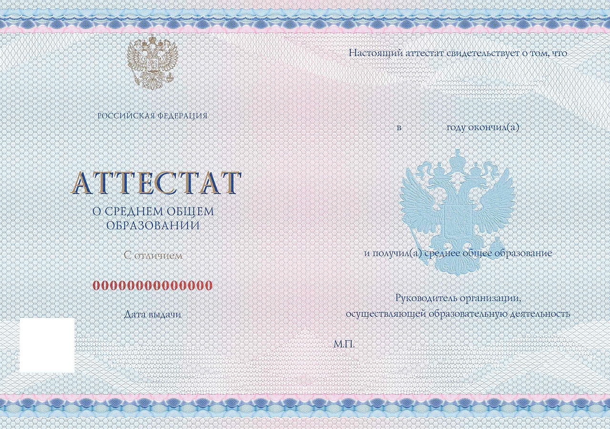

a
a
a
Как поступить в ОмГТУ
Омский политех – самый крупный вуз региона с численностью более 14 000 студентов. Здесь есть все необходимое для качественного образования: сильный профессорско-преподавательский состав, удобные учебные помещения, богатая библиотека, современное оборудование, научно-исследовательские лаборатории и ресурсные центры.
Направления подготовки
Вуз предлагает широкий спектр направлений подготовки и специальностей, чтобы удовлетворить интересы и стремления каждого абитуриента – в этом году представлено 90 программ бакалавриата, специалитета и магистратуры и 2538 бюджетных мест.
Студенческая жизнь
Учеба в ОмГТУ – это не только знания, но и насыщенная студенческая жизнь. В университете действуют студенческие объединения, есть различные творческие коллективы и спортивные секции. Обучающиеся имеют возможность получать повышенную государственную стипендию и путешествовать по городам России.
Как подать документы
Команда вуза готова помочь на каждом этапе поступления, по возникающим вопросам вы можете обращаться в группу Абитуриента ОмГТУ, по телефону +7 (3812) 72-90-55 или почте pk@omgtu.ru.
Подать оригинал аттестата можно одним из следующих способов:
- Приехать лично по адресу: г. Омск, пр. Мира, 11, 8 корпус, 1 этаж;
- Поставить отметку на портале Госуслуг;
- Передать через доверенное лицо;
- Отправить по почте или через службы курьерской доставки: 644050, Омск, проспект Мира, 11 с пометкой «Для приемной комиссии».
Контакты
Адрес: 644050, г. Омск, пр. Мира, 11, корпус 8, каб. 8-115
Телефон: +7 (3812) 72-90-55 (многоканальный)
E-mail: pk@omgtu.ru